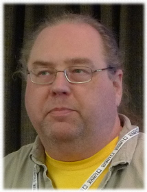

NFS performance
On day two of the 2015 Linux Storage, Filesystem, and Memory Management Summit, Chuck Lever led a discussion on NFS performance. There are some bottlenecks to look at, and suggestions were made on ways to avoid some of them.
The transport_lock is a spinlock used by the Remote Procedure Call (RPC) layer. It is a bit like the Big Kernel Lock (BKL), Lever said, in that it protects all of the transport data on a per-socket basis. It is used as a queueing mechanism to prevent RPCs from interleaving on the wire. He is looking for ways to break up that lock, much as the BKL-removal work did with the BKL.

Currently, a thread is woken up to copy the received data, but it might make more sense to do that work in software interrupt (softirq) context, Jeff Layton said. That is how remote DMA (RDMA) does things, Lever said. Layton said you could start by simply doing copies out of the socket buffer from the softirq, but eventually using splice() might provide even better performance.
Lever said that there is also a proposal to make incoming data be page-aligned. Andreas Gruenbacher said that the idea was to use large network frames and to receive them into page-aligned buffers.
Dave Chinner said that will require the sending side to be aware of that setting so that it can form its TCP packets in large frames. Bruce Fields said that the networking developers didn't like the change. Chinner said that he was not surprised, as messing with segment boundaries is always tricky. Gruenbacher noted that it required using the new huge frames to get enough data into one packet, as doing page-aligned receives on small packets will just waste space.
One of the two data copies that are currently being done could be saved if the softirq code changed to look inside the RPC packets, Fields said. By figuring out what the packet contains, the RPC code could route it to the right place, sometimes using splice(). Lever said that RDMA solves the copying problem nicely, but that it is a niche use case and likely to remain that way.
Another area of performance improvement is to use NFS compounds, which allow multiple read and write operations in a single NFS transaction. Lever said that Fields has been working on support for that as part of the NFS 4.2 support in Linux.
In addition, Lever said, there is a new operation in 4.2 called READ_PLUS that will assist when clients are reading sparse files. That operation allows the server to report the holes optimally. There was concern that rematerializing the holes on the client might be expensive, but that turned out not to be the case.
Fields said that he used SEEK_HOLE and SEEK_DATA flags to lseek() to add the holes to the files on the client side. But Chinner cautioned that there is no way of atomically finding holes and returning data beyond them, as it will always race with other operations that are happening on the file.
Lever said that NFS delegations, which are a kind of file lock, would be required from the server when the READ_PLUS operation is used. That will only be granted by the server if no one has the file open for writing. However, delegation is not enabled on all NFS servers. And that is where the conversation kind of trailed off.
[I would like to thank the Linux Foundation for travel support to Boston
for the summit.]
| Index entries for this article | |
|---|---|
| Kernel | Filesystems/NFS |
| Conference | Storage, Filesystem, and Memory-Management Summit/2015 |